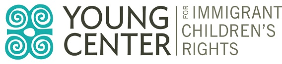

Media
Young Center for Immigrant Children
We are asking for donations to the Young Center for Immigrant Children. In fact, we've partnered up with the very kind and talented Jeff Poole (Second City) to throw them a free workshop in December. To donate just go to our FB page and view our announcement.
